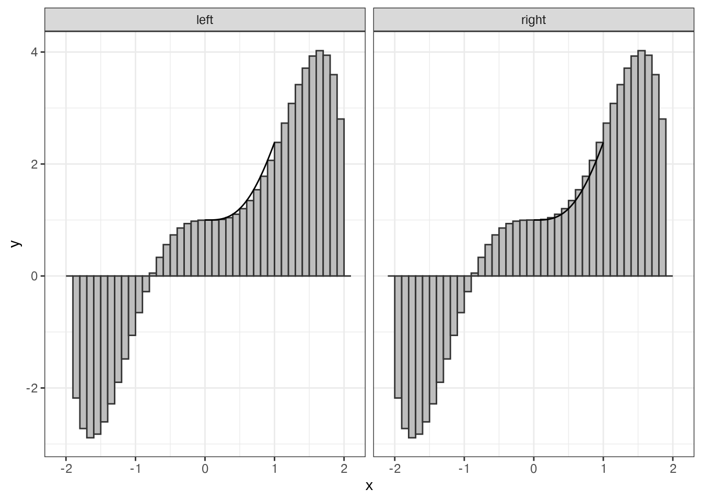

f <- function(x) {
(x^3 * cos(x/2) + 1/2) * sqrt(4 - x^2)
}More on Simulation – Numerical Integration
This was originally written in response to student questions about this post on integrating using Monte Carlo methods.
Numerical Integration Approaches
Let’s start by defining the function as in the blog post, and consider a few different ways we can get the integral over \([-2, 2]\).
Using R’s integrate function
We can look up R’s numerical integration function help page and try to use that.
integrate {stats} R Documentation
Integration of One-Dimensional Functions
Description
Adaptive quadrature of functions of one variable over a finite or infinite
interval.
Usage
integrate(f, lower, upper, ..., subdivisions = 100L,
rel.tol = .Machine$double.eps^0.25, abs.tol = rel.tol,
stop.on.error = TRUE, keep.xy = FALSE, aux = NULL)
Arguments
f an R function taking a numeric first argument and returning a
numeric vector of the same length. Returning a non-finite
element will generate an error.
lower, upper the limits of integration. Can be infinite.
... additional arguments to be passed to f.
subdivisions the maximum number of subintervals.
rel.tol relative accuracy requested.
abs.tol absolute accuracy requested.
stop.on.error logical. If true (the default) an error stops the function.
If false some errors will give a result with a warning in the
message component.
keep.xy unused. For compatibility with S.
aux unused. For compatibility with S.So given that we need the first 10 digits, we want to have at least 9 digits in the decimal place. We can use sprintf to get an arbitrary number of digits to print, and we can use the absolute tolerance argument to ensure that our answer is at least within this bound.
res <- integrate(f, -2, 2, abs.tol = 1e-10)
# Get 10 digits:
sprintf("%0.09f", res$value)[1] "3.141592654"Numerical Integration (the Old-fashioned way)
Think back to your Calculus class and how you used the method of limits to do integration using rectangles. Sound familiar?
library(tibble)
library(dplyr)
library(ggplot2)
from_left <- tibble(x = seq(-2, 2, .1), xmin = x, xmax = x + .1, y = f(x), type = "left")
from_right <- tibble(x = seq(-2, 2, .1), xmin = x - .1, xmax = x, y = f(x), type = "right")
rects <- bind_rows(from_left, from_right)
ggplot(rects, aes(xmin = xmin, xmax = xmax, ymin = 0, ymax = y)) +
geom_rect(fill = "grey", color = "grey20") +
facet_wrap(~type) +
geom_function(fun = f) +
theme_bw()
We can use this same approach to calculate the integral, using a while loop to ensure that the answer is within our desired numerical tolerance. This is probably not as efficient as the previous solution, but it works as long as your function can be evaluated at all points within your interval.
tol <- 10e-10/2
delta <- .5
n <- 0
iter_diff <- Inf # something big
area <- 0
# It's Always a good idea to have a maximum number of iterations to prevent
# while loops running forever.
while(iter_diff > tol & n < 100) {
n <- n + 1
delta <- delta/2
from_left <- tibble(x = seq(-2, 2, delta), y = f(x),
xmin = x, xmax = x + delta, type = "left")
from_right <- tibble(x = seq(-2, 2, delta), y = f(x),
xmin = x - delta, xmax = x, type = "right")
rects <- bind_rows(from_left, from_right) %>%
group_by(type) %>%
summarize(area = sum(delta * (y - 0)))
new_area <- mean(rects$area)
# Calculate difference from previous iteration
iter_diff <- abs(area - new_area)
area <- new_area
}
sprintf("%0.09f", area)[1] "3.141592653"Monte Carlo Integration
Let’s think a bit about what we did last time. We created rectangles, broke our function down into pieces, and evaluated the area of each piece. But in each loop iteration we throw away all of our previous work, which isn’t really that efficient.
What if instead we sample points \(x\) randomly from \([-2, 2]\), evaluate each point at \(f(x)\), and take the average value? Then we can keep adding points as necessary until we reach the desired accuracy.
To make this point, I’m going to do something slightly less efficient: generate a bunch of data and let you see how the result changes as more data is added to the stack.
mc_data <- tibble(x = runif(10000000, -2, 2), y = f(x)) %>%
mutate(
# Number of data values
n = row_number(),
# Sum of all data values up to that point
ysum = cumsum(y),
# Cumulative mean
yavg = ysum/n,
# Multiply by x range to get estimate
est = (2 - (-2)) * yavg,
err = pi - est
)
# Ggplot isn't gonna like having 100 million points, so let's focus on the gist of this...
plot_data <- mc_data[c(1:1000,
(101:999)*10,
round(seq(10000, nrow(mc_data), length.out = 50000))),]
ggplot(plot_data,
aes(x = n, y = est)) +
geom_line() +
geom_hline(aes(yintercept = pi), color = "red") +
scale_x_log10()# Get differences between successive iterations
diffs <- diff(mc_data$est)
# How many data points until we could stop?
# Get all iterations within tol of the answer from the next iteration
all_close_iterations <- which(abs(diffs) < tol)
# If we stop at the first time that 2 successive observations are within tol,
# we will stop too early
(npts <- min(all_close_iterations))[1] 341605sprintf("%0.09f", mc_data$est[npts + 1])[1] "3.110102765"# Safer - stop when you've got multiple times where you've hit the tolerance
# threshold
sprintf("%0.09f", mc_data$est[all_close_iterations[1000]])[1] "3.137094942"In the end, MC integration doesn’t have quite the level of precision of other ways to computationally solve the problem, but it also comes without restrictions on things like continuity conditions.
It’s worth noting that the MC method I used here is 1) extremely simple, and 2) different than that used in the blog post.
MC integration is usually used for higher-dimensional integrals, so there are lots of strategies to make that more efficient. I’ve gone for a slightly more efficient method than was used in the blog post but my approach is also probably more fragile (and doesn’t really rely on randomness - it’s the same basic approach I took in the previous section).